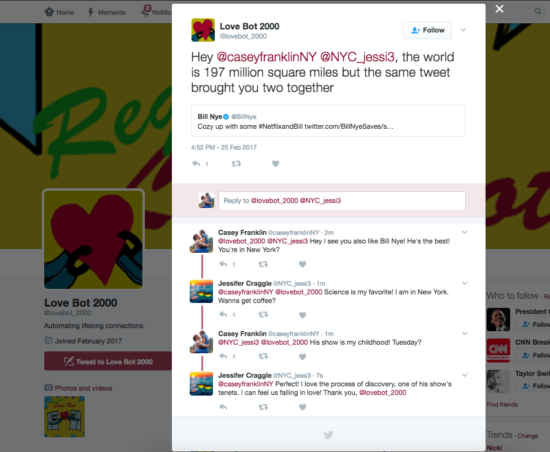

Automating lifelong connections,
Disrupting dating,
Pairing potential soul mates whether they want love or not.
this is a Twitter bot: @lovebot_2000
People use technology to find love. With Grindr, Tinder, Bumble, people are relentlessly swiping away the days. These apps connect people in a common geographic location, all desperately looking for love. As technologists it is duty to make this more efficient.
Love Bot 2000 is disrupting dating and automating the creation of lifelong connections via the twittersphere. It crawls the tweets of celebrities like Neil Degrasse Tyson, finds people that retweeted their same tweet and are geographically near each other, and then relentlessly tweets intros @ these potential soul mates. This bot instigates love for people, regardless of whether they're searching for it, separated in age by 50 years, or are in committed relationships.
This is love in the digital age.
Testimonials
"It was love at first follow"
— Neil deGrasse Tyson fan and retweeter"She followed me, then I followed her, we tweeted @ each other, then DMed... It was history from there..."
— Science enthusiast and Bill Nye retweeterWatch Love Unfold
twitter.com/lovebot_2000 Celebrity Application
Are you a celebrity who wants to give your tweets the power to instigate love?
You may already be loved by your fans, but you can turn that love into more than love for just you.
Apply to be a featured celebrity!
If accepted, the Love Bot will crawl your twitter feed and find pairs of people who both retweeted your same tweet and are geographically near each other. It will tweet a witty intro @ these potential soul mates, showing them how their love for you can lead to love for eachother...
Contributions from Non-Famous Folk
Are you feeling left out because you're not famous and not enough robots are paying attention to you?
Or are you witty and have ideas for what the Love Bot should say?
Tell the Love Bot so that your romantic genius can be realized in tweets: Tweet @lovebot_2000 or fill out this form.
Are you feeling left out because you're not famous and not enough robots are paying attention to you?
Or are you witty and have ideas for what the Love Bot should say?
Tell the Love Bot so that your romantic genius can be realized in tweets: Tweet @lovebot_2000 or fill out this form.